Simpson County Career Technical Building
Copiah-Lincoln Community College
Mendenhall, Mississippi
The Simpson County Career Technical Building expands a rural college building with classroom and technology/lab space organized as three wings around two courtyards. The southerly existing building conceals the addition from the campus entrance, in-forming new safe and inviting east and west entrances at rear of campus. A sunlit lobby at west side, and shops at east, anchor the plan, with layered screening cascading and directing the path from east parking. The new form, alongside existing north-reaching wings, creates a central courtyard negotiating steep existing grading. A secondary courtyard sits between west and north classroom wings, extended by an elevated lawn framing views to woods.
Total area: 23,412 G.S.F.
Winner 2020 AIA Merit Award
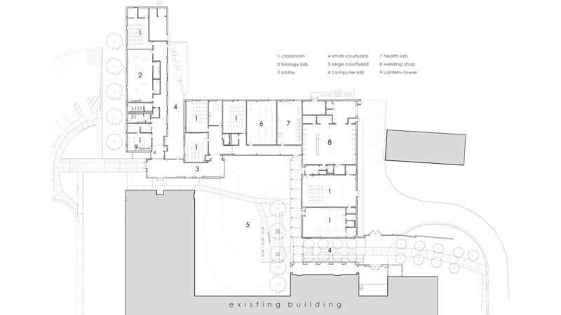
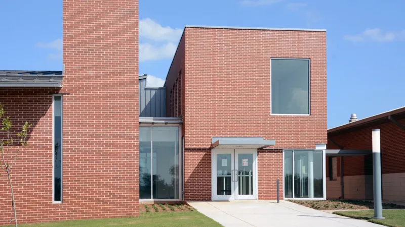
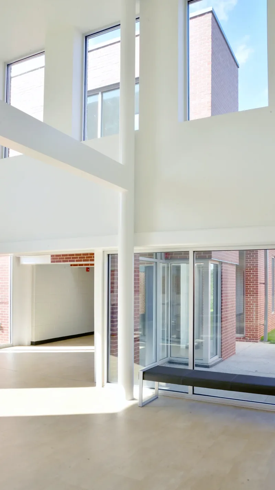
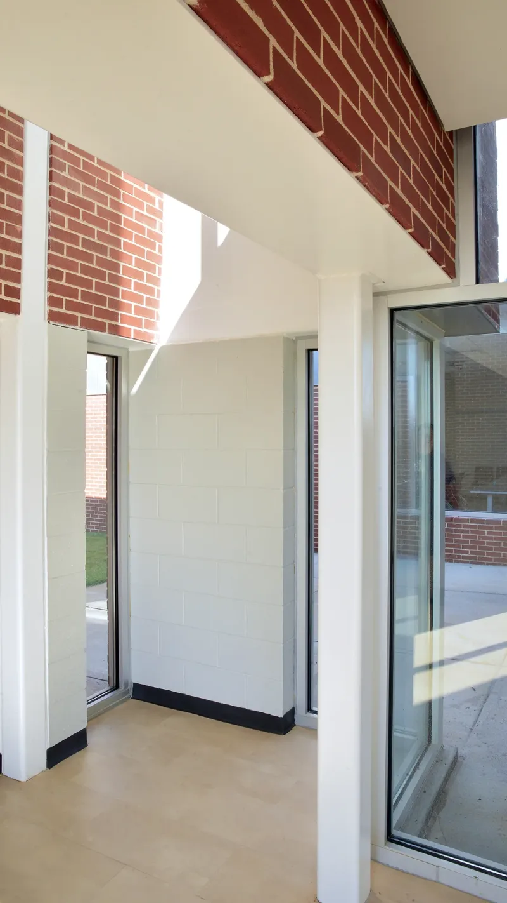
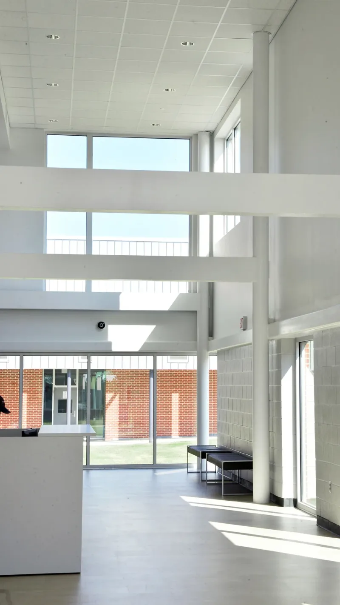
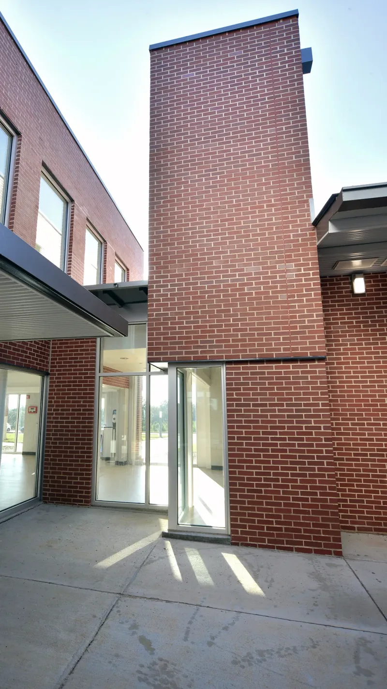
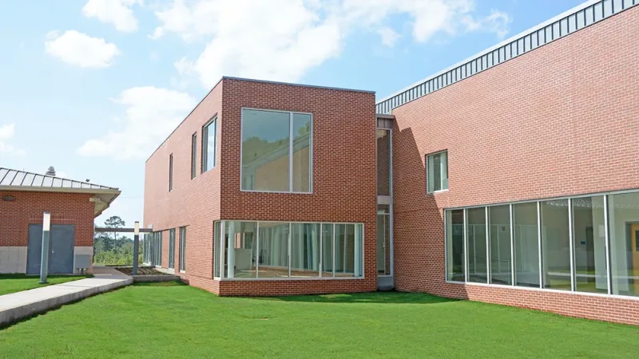
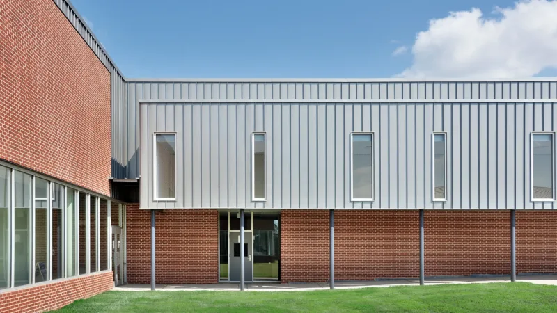
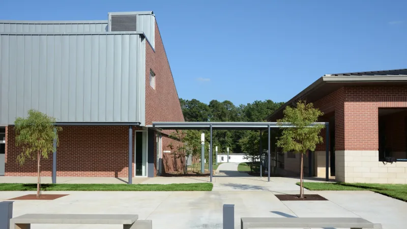
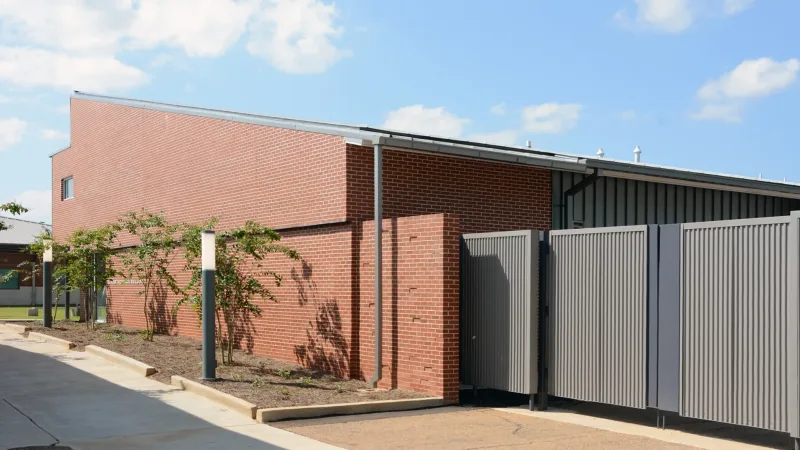
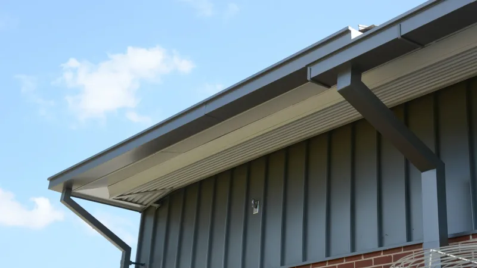
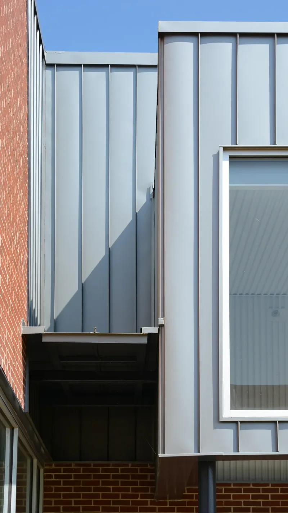
 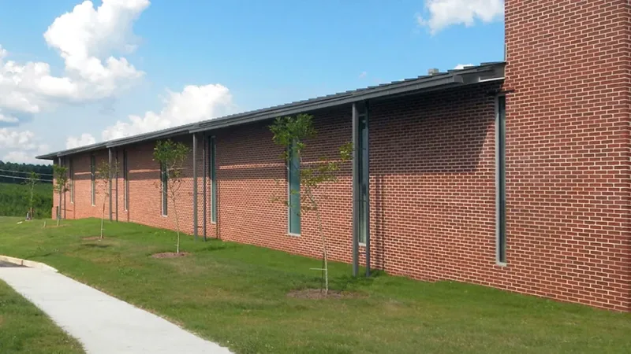
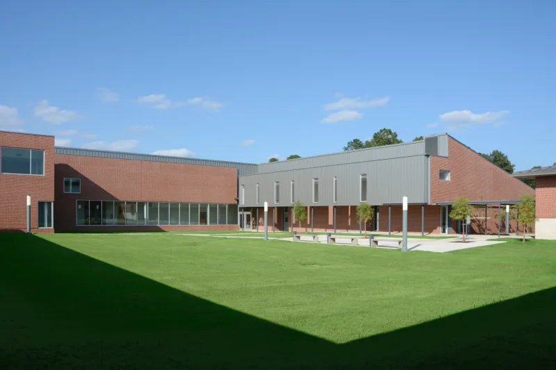
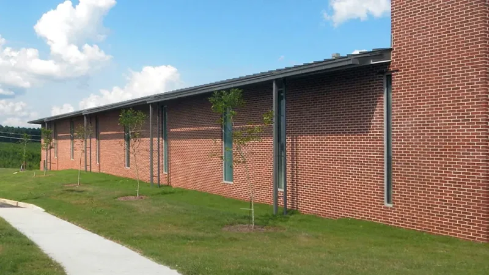
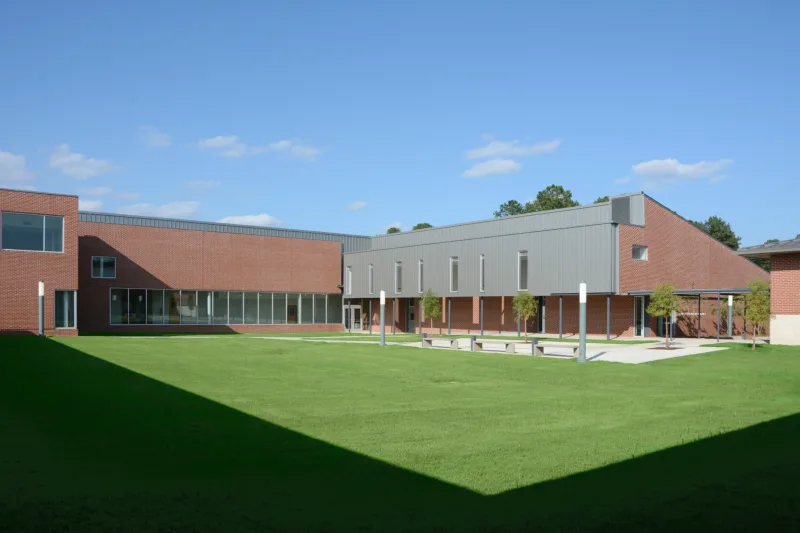
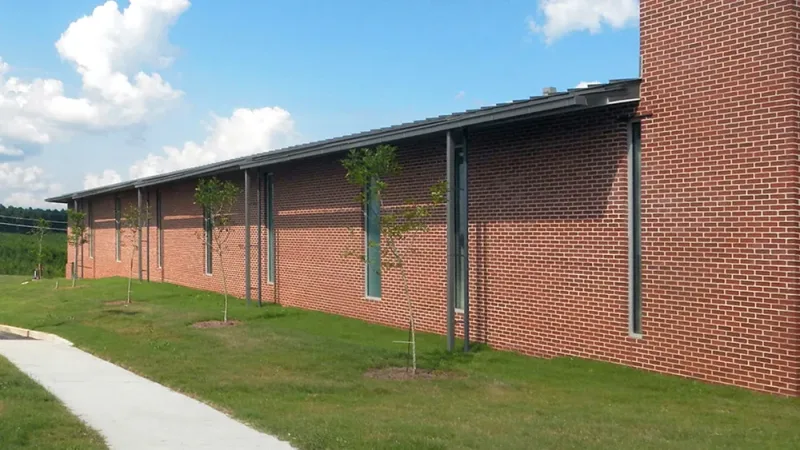
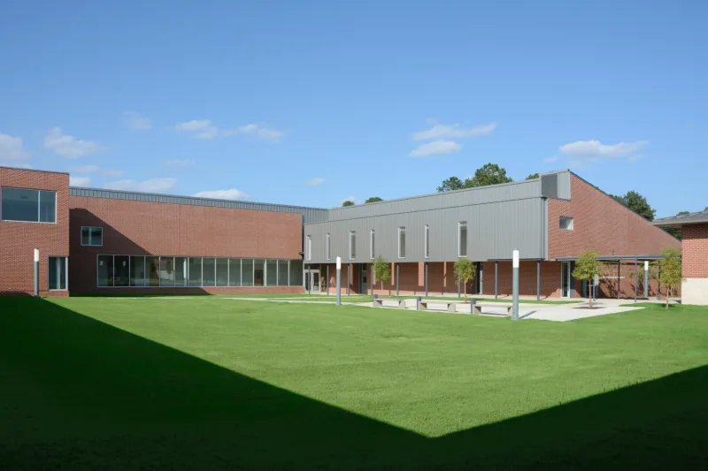